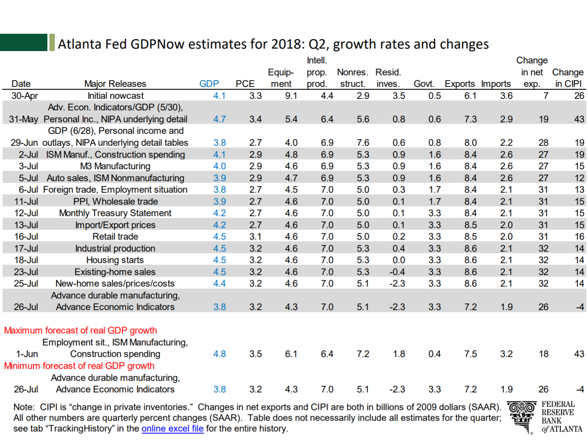
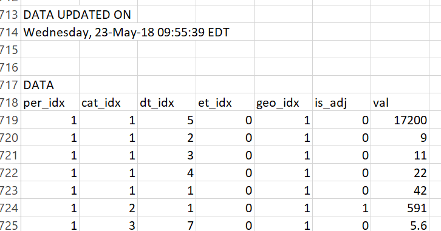
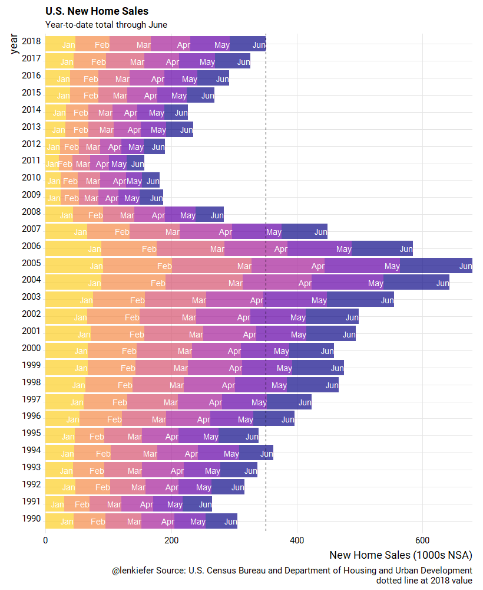

Indications are that U.S. housing market activity in the middle part of 2018 has moderated. Home sales estimates for both new home sales and existing home sales declined on a seasonally adjusted basis in June relative to May. House price growth has also moderated recently. Some folks have gotten animated about the recent trends.
I’m more sanguine about the recent data. Certainly a slowdown in housing market activity would be cause for concern. Housing tends to be cyclical and a marked slowdown in housing activity would potentially signal a slowdown in broader economic growth. However, we have to be careful when interpreting housing data. Estimates of housing market activity are highly uncertain and it takes several months be to separate a trend from noise.
The rise in mortgage interest rates earlier this year may have slowed activity a little. Mortgage rates have moderated in recent weeks. Underlying demand remains strong, and young adult homeownership rates are increasing. We’ll have to keep an eye on data to see how the market evolves.
To that end, in this post we’ll look closely at the recently released new home sales data for the United States.
Per usual, we’ll analyze the data with R and I’ll post code as we go along.
Data
Data for new home sales come from the U.S. Census Bureau joint with the U.S. Department of Housing and Urban Development. The data are collected through the Survey of Construction.
The data on new residential sales are widely watched as they provide insight into residential investment. For example, the Federal Reserve Bank of Atlanta’s GDPNow estimate uses the home sales report to adjust their estimates. The release of June 2018 new home sales data caused the GDPNow estimate for 2018Q2 GDP growth to decline by 0.1 percentage points and reduced the estimated growth in residential investment from -0.4 to -2.3 percent. Detail in linked pdf.
GDPNow’s response to home sales data 
Getting data
New home sales data can be obtained from a variety of sources, including the Federal Reserve Bank of Saint Louis’s FRED. But because we are interested in looking at margins of error, we’ll get the data direct from Census. This link provides a zip file that contains a .csv file called RESSALES-mf.csv. I’ll unzip the file and save it in my data directory and the code presumes you have done the same.
Wrangle
The .csv file contains headers with a bunch of information about the data. Things like geographic codes, dates, etc. If we opened the .csv in excel you’d see something like this:

If you scroll way down, to row 718 as of July 26, 2018, you’d see this structure:

From row 719 on is where the data lives. The prior rows tell us about the data (what the mysterious columns like cat_idx mean).
We’ll use data.table’s fread function to read in the data.
# load libraries ----
suppressPackageStartupMessages({
library(data.table)
library(tidyverse)
library(viridis)
library(ggridges)
library(extrafont)
library(lubridate)
library(forcats)
# for animations
library(tweenr)
library(gifski)}
)
# load data ----
# skip to row 719
dt <- fread("data/RESSALES-mf.csv",skip=719)
print(head(dt))## per_idx cat_idx dt_idx et_idx geo_idx is_adj val
## 1: 1 1 5 0 1 0 17200
## 2: 1 1 2 0 1 0 9
## 3: 1 1 3 0 1 0 11
## 4: 1 1 4 0 1 0 22
## 5: 1 1 1 0 1 0 42
## 6: 1 2 1 0 1 1 591Adding some dates would be helpful. Scrolling up in the .csv we see that per_idx is a monthly index starting in January 1963. Let’s add a date:
df.dates <- data.frame(per_idx=1:666, date=seq.Date(from=as.Date("1963-01-01"), by= "1 month", length.out=666))
df<- left_join(dt, df.dates, by="per_idx")Uncertain housing data
Let’s plot a trend for new home sales, but include a band to show uncertainty around the estimate. The Census provides a relative standard error, expressed as a percent of the point estimate. We can use a normal approximation to construct a band around the monthly estimate.
Let’s first do it for the United States (geo_idx==1) and total (dt_idx==) monthly home sales at a seasonally adjusted annual rate (cat_idx==2). After we extract the point estimates, we’ll extract the error et_idx and then combine to plot.
The et_idx variable is the relative standard error for estimated home sales. To convert to a confidence interval we’ll use the qnorm function to compute the perentiles assuming a normal distribution centered at the estimate with standard error equal to the estimate times the et_idx value divided by 100. Note that Census rounds values so our estimates may differ slightly from the reported estimates.
df2 <- filter(df,
cat_idx==2, # NSA home sales
dt_idx==1, # All houses
geo_idx==1 # Just usa
)
# extract errors.
df.err <- filter(df, et_idx==1, cat_idx==2,geo_idx==1)
df3 <- data.frame(date=df.err$date,err=df.err$val)
df3 <- left_join(df3, df2, by="date")
# make plot ----
ggplot(data=filter(df3,year(date)>2014), aes(x=date, y=val, fill="5th to 25th (75th to 95th)"))+
scale_fill_viridis(option="C",discrete=T,direction=1,begin=0.85,end=0.9, name="Confidence Interval Around Estimates")+
# Ribbons around the point estimate
# based on normal approximation with qnorm()
geom_ribbon(aes(ymin=qnorm(.05,val,val*err/100), ymax=qnorm(.25,val,val*err/100)), alpha=0.2)+
geom_ribbon(aes(ymin=qnorm(.25,val,val*err/100), ymax=qnorm(.75,val,val*err/100), fill="25th to 75th pctile"), alpha=0.5)+
geom_ribbon(aes(ymin=qnorm(.75,val,val*err/100), ymax=qnorm(.95,val,val*err/100)), alpha=0.2)+
geom_line(size=1.1,color="#27408b")+
geom_hline(data= .%>% tail(1), aes(yintercept=val),linetype=2)+
scale_y_continuous(sec.axis=dup_axis())+
theme_ridges(font_family="Roboto")+
theme(legend.position="top", plot.title=element_text(size=20))+
labs(x="",y="",subtitle="New Home Sales (1000s, SAAR)",
title="U.S. New Home Sales",
caption="@lenkiefer Source: U.S. Census Bureau and Department of Housing and Urban Development\nConfidence interval based on normal distribution given relative standard error.\nDotted line at June 2018 estimate")
Here we can see that though the estimate for June ticked down, it’s hard to say for sure that home sales have done much of anything since 2017. Yes, the general tends seems up, but there’s a wide confidence interval.
Regional trends
We can also apply the same techniques to examine regional trends. We’ll use the case_when function. See @hrbrmstr on case_when in this post.
# regional with intervals
df2.r <- filter(df,
cat_idx==2, # NSA home sales
dt_idx==1, # All houses
! geo_idx ==1 # not region =1 (excludes US)
)
# note: corrected to merge on geo_idx and date
df.err.r <- filter(df, et_idx==1, cat_idx==2,! geo_idx ==1)
df3.r <- data.frame(date=df.err.r$date,err=df.err.r$val,geo_idx=df.err.r$geo_idx)
df3.r <- left_join(df3.r, df2.r, by=c("date","geo_idx"))
df3.r <-
df3.r %>%
mutate(mname=fct_reorder(factor(as.character(date, format="%b")),-month(date)),
year=year(date),
region=case_when(
geo_idx==1 ~ "US",
geo_idx==2 ~ "Northeast",
geo_idx==3 ~ "Midwest",
geo_idx==4 ~ "South",
geo_idx==5 ~ "West"
))
ggplot(data=filter(df3.r,year(date)>2014), aes(x=date, y=val, fill="5th to 25th (75th to 95th)"))+
scale_fill_viridis(option="C",discrete=T,direction=1,begin=0.85,end=0.9, name="Confidence Interval Around Estimates")+
geom_ribbon(aes(ymin=qnorm(.05,val,val*err/100), ymax=qnorm(.25,val,val*err/100)), alpha=0.25)+
geom_ribbon(aes(ymin=qnorm(.25,val,val*err/100), ymax=qnorm(.75,val,val*err/100), fill="25th to 75th pctile"), alpha=0.75)+
geom_ribbon(aes(ymin=qnorm(.75,val,val*err/100), ymax=qnorm(.95,val,val*err/100)), alpha=0.25)+
facet_wrap(~paste0(region," Region"),scales="free")+
geom_line(size=1.05,color="#27408b")+
geom_hline(data= .%>% filter(date==max(df3$date)), aes(yintercept=val),linetype=2)+
scale_y_continuous(sec.axis=dup_axis())+
theme_ridges(font_family="Roboto")+
theme(legend.position="top", plot.title=element_text(size=20))+
labs(x="",y="",subtitle="New Home Sales (1000s, SAAR)\nNote different scale for each panel!",
title="U.S. Regional New Home Sales",
caption="@lenkiefer Source: U.S. Census Bureau and Department of Housing and Urban Development\nConfidence interval based on normal distribution given relative standard error.\nDotted line at June 2018 estimate")
Animated Bar
Let’s look at the year-to-date totals through June and compare across years. I’ve shared this chart before, but the old post got messed up with my transition to the new theme. Let’s recreate it and animate it using gifski and tweenr.
What we’ll do to create this plot is get monthly estimates of non-seasonally adjusted home sales cat_idx==1 and crate a stacked bar chart.
df.nsa <- filter(df, cat_idx==1, dt_idx==1, geo_idx==1) %>%
select(date,geo_idx,val) %>%
mutate(mname=fct_reorder(factor(as.character(date, format="%b")),-month(date)),
year=year(date)) %>%
group_by(year) %>%
mutate(vsum=cumsum(val)) %>%
ungroup()
ggplot(data=filter(df.nsa,year<=21999, year>1989,month(date)<=6),
aes(y=val,x=factor(year),fill=mname, label=mname))+
geom_col(alpha=0.7)+coord_flip()+
geom_text(aes(y=vsum), hjust=1,color="white")+
scale_fill_viridis_d(option="C",end=0.9, name="Month")+
scale_y_continuous(expand=c(0,0))+
theme_ridges(font_family="Roboto", font_size=14)+
theme(legend.position="none")+
geom_hline(data= . %>% tail(1), aes(yintercept=vsum), linetype=2)+
labs(x="year",y="New Home Sales (1000s NSA)",
title="U.S. New Home Sales",
subtitle="Year-to-date total through June",
caption="@lenkiefer Source: U.S. Census Bureau and Department of Housing and Urban Development\ndotted line at 2018 value") +
guides(colour = guide_legend(reverse=FALSE))
New we can animate our static plot. The follwing code creates a smoothly interpolated animation as the bars slide out month by month. We use gifski like we did in this post on house prices to compile our animation.
# set YOURDIRECTORY to a play wher eyou want to save files
YOURDIRECTORY <- path.to.your.image.folder
df.plot <- filter(df.nsa, year>1989,month(date)<=6)
myf<-function(i, in.df=df.plot){
out.df<-in.df %>%
select(date,mname,year,val) %>%
mutate(val=ifelse(month(date)<=i, val,0))
}
mylist<- map(c(6,0:6,6,6), myf)
tween.df<-tween_states(mylist,tweenlength=1,statelength=2, ease=rep('cubic-in-out',120), nframes=60) %>% as.tibble() %>%
mutate(mname=forcats::fct_reorder(mname,-month(date))) %>%
group_by(year, .frame) %>%
mutate(vsum=cumsum(val)) %>%
ungroup()
N <- max(tween.df$.frame)
plotf <- function(i=N){
ggplot(data=filter(tween.df, .frame==i),
aes(y=val,x=factor(year),fill=mname, label=mname))+
geom_col(data=df.plot, alpha=0)+
geom_col(alpha=0.7)+coord_flip()+
geom_text(data=. %>% filter(val>0), aes(y=vsum), hjust=1,color="white")+
scale_fill_viridis_d(option="C",end=0.9, name="Month")+
scale_y_continuous(expand=c(0,0))+
theme_ridges(font_family="Roboto", font_size=14)+
theme(legend.position="none")+
geom_hline(data= . %>% tail(1), aes(yintercept=vsum), linetype=2)+
labs(x="year",y="New Home Sales (1000s NSA)",
title="U.S. New Home Sales",
subtitle="Year-to-date total through June",
caption="@lenkiefer Source: U.S. Census Bureau and Department of Housing and Urban Development\ndotted line at 2018 value") +
guides(colour = guide_legend(reverse=FALSE))
}
gif_file <- save_gif({for (i in seq(1,N)){
g<- plotf(i)
print(g)
print(paste(i,"out of",N))
}
for (ii in 1:3){
print(g)
print(paste(ii,"out of",30))
}
}, gif_file= paste0(YOURDIRECTORY ,"nhs_bar.gif"),width = 820, height = 1000, res = 92, delay=1/10)